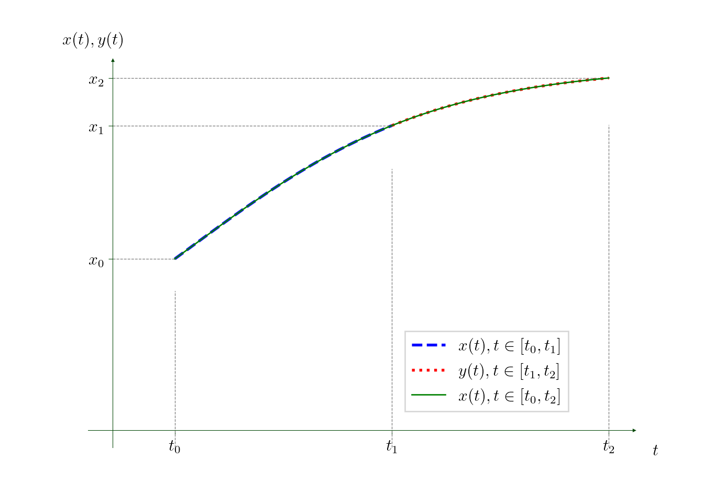

2 Differential Equations
2.1 Terminology
- Let \(f:{\mathbb{R}}\to{\mathbb{R}}\). Consider the differential equation
\[ x'(t)=f\bigl(x(t)\bigr), \qquad t\in{\mathbb{R}}. \tag{2.1}\]
- We will normally omit \(t\) by writing just
\[ x'=f(x). \]
Recall, that one can interpret \(t\) as time (if \(t<0\) it hence corresponds to the “past”).
If we set the value of \(x\) at some \(t_0\), i.e. \(x(t_0)=:x_0\in{\mathbb{R}}\), (eq-1dDS) is called the initial value problem (and, recall, \(x_0\) is called the initial condition). Typically, \(t_0=0\).
Equation (eq-1dDS) defines a continuous dynamical system.
2.2 Remark
Differential equation (eq-1dDS) defines a first-order dynamical system, because its right-hand side does not depend explicitly on \(t\).
For example, \(x'= \sin x\) defines a first-order dynamical system, whereas \(x'=t+\sin x\) defines a second-order dynamical system (because its right-hand side depends on two arguments: \(t\) and \(x\)).
This (standard) terminology slightly contradicts with the (standard) terminology of the theory of differential equation, where (eq-1dDS) is called the first-order differential equation because its maximal order of derivatives is \(1\) (i.e. both \(x'= \sin x\) and \(x'=t+\sin x\) are first-order differential equations).
Note that, in the theory of differential equations, the equation (eq-1dDS) is called autonomous since its right-hand side does not depend on \(t\) (whereas, e.g. \(x'=t+\sin x\) is non-autonomous).
To summarize: a first-order dynamical system is a first-order autonomous differential equation (with a clash of notions).
2.3 Theorem: Existence and uniqueness
Let \(f=f(x)\) be a continuously differentiable (a.k.a. smooth) real-valued function on an interval \(x\in(a,b)\subseteq {\mathbb{R}}\) (i.e. both \(f\) and \(f'\) are continuous on \((a,b)\)).
Let \(t_0\in R\) and \(x_0\in (a,b)\). Then
- the initial value problem
\[ x'(t) = f\bigl(x(t)\bigr),\quad x(t_0) = x_0 \tag{2.2}\]
has a unique solution on the time interval \([t_0-\delta,t_0+\delta]\) for some \(\delta>0\);
there exists a maximum (possibly infinite) time interval \((T_-,T_+)\subseteq {\mathbb{R}}\) where (eq-1dIVP) has a unique solution;
the solution \(x=x(t)\) is continuously differentiable in \(t\in (T_-,T_+)\);
if \(T_\pm\neq\pm\infty\), then there are exactly two possibilities:
\(|x(t)|\) becomes unbounded (arbitrary large) when \(t\to T_\pm\) (it is called the explosion in finite time);
\(\lim\limits_{t\to T_\pm} x(t)\in \{a,b\}\) (the solution leaves the domain where \(f\) is smooth).
2.4 Example: Non-uniqueness
Consider the initial value problem
\[ x'=x^{\frac{1}{3}}, \qquad x(0)=0. \tag{2.3}\]
Then evidently \(x(t)=0\) for all \(t\geq0\) is a solution to (eq-nonuniq). However, if \(x\not\equiv 0\), we get \[ \frac{dx}{dt}=x^{\frac{1}{3}}, \qquad \frac{dx}{x^{\frac{1}{3}}}=dt, \qquad \frac{3}{2}x^{\frac{2}{3}}=t+C. \] Take \(t=0\), then \(C=0\), as as \(x(0)=0\). Hence, there is another solution to (eq-nonuniq): \(x=x(t)=\Bigl(\frac{2}{3}t\Bigr)^{\frac{3}{2}}\).
The reason for the non-uniqueness of solutions is that, the function \(f(x)=x^{\frac{1}{3}}\) has unbounded (discontinuous) derivative: \(f'(x)=\frac{1}{3}x^{-\frac{2}{3}}\) is unbounded near \(x_0=0\).
2.5 Example: Explosion in finite time
Consider the initial value problem
\[ x'=x^2+1, \qquad x(0)=0. \tag{2.4}\]
Then \[ \frac{dx}{x^2+1}=dt, \qquad \tan^{-1} x = t+C \] and taking \(t=0\) one gets \(C=0\). Hence, \(\color{RedViolet}x =\tan t\) is the unique solution to the initial value problem (eq-explode). This solution can not be continued beyond the interval \(\bigl(-\frac{\pi}{2},\frac{\pi}{2}\bigr)\) since \(\lim\limits_{t\to\pm\frac{\pi}{2}}\tan(t) = \infty\).
2.6 Example: Non-expandable time interval
Consider the initial value problem
\[ x'=-\frac{1}{2x}, \qquad x(0)=1. \tag{2.5}\]
Note that here \(f(x)=-\frac{1}{2x}\) is continuously differentiable on \((a,b)=(0,\infty)\) and \(1\in(a,b)\). We have \[ 2xdx = -dt, \qquad x^2=-t+C, \] and taking \(t=0\) one gets \(1=x(0)^2=C\), hence \(x=\pm\sqrt{1-t}\) and since \(x(0)=1>0\), one gets the unique solution to (eq-stuck): \(\color{RedViolet}x(t)=\sqrt{1-t}\). In contrast to Example 2.5, the solution is bounded, however, it cannot be extended beyond \(t\in[0,1)\), see r.h.s. of (eq-stuck); indeed, \(\lim\limits_{t\to1}x(t)=x(1)=0=a\notin(a,b)=(0,\infty)\).
2.7 Remark
If \(f\) is continuously differentiable on an infinite interval (e.g. on \({\mathbb{R}}\)) then both possibilities presented in Theorem 2.3, actually, coincide.
In this course, we will deal mainly with differential equations \(x'=f(x)\) where \(f\) is continuously differentiable on \({\mathbb{R}}\). Then the cases considered in Example 2.4 and Example 2.6 are impossible. How to recognise the case similar to that in Example 2.5, we will discuss below.
2.8 Definition: Trajectories
- Let \(x(t)\) be a solution to the differential equation \(x'(t)=f(x(t))\) on a time interval \(t\in(T_-,T_+)\subseteq{\mathbb{R}}\). Then the set of points
\[ \Bigl\{ \bigl(t,x(t)\bigr)\in{\mathbb{R}}^2 \Bigm\vert t\in(T_-,T_+) \Bigr\} \]
is called a trajectory.
- The graph of a trajectory on the coordinate plane \(\bigl(t,x(t)\bigr)\) is called the space-time diagram.
2.9 Flow property
Let \(f\) be continuosly differentiable on an interval \((a,b)\), so that the equation \(x'=f(x)\) has the unique solution on a time interval \((T_-,T_+)\). Let \(x(t_0)=x_0\in (a,b)\) for some \(t_0\in(T_-,T_+)\). Take any \(t_1\) such that \(t_0<t_1<T_+\). Denote \(x_1 := x(t_1)\in(a,b)\). {Consider now the same differential equation \(y'=f(y)\) (written just for another notation for the solution) and consider the initial condition for it: \(y(t_1)=\color{RedViolet}x_1\).} {By the uniqueness, one gets that \({\color{RedViolet}x(t_2)=y(t_2)}=:x_2\) for any \(t_2\in(t_1,T_+)\).}

In other words, if a solution evolves on \([t_0,t_1]\), then stops at the moment of time \(t_1\) and immediately starts (at the same value) evolving again on \([t_1,t_2]\), then the result is the same if the solution evolved, starting from the moment of time \(t_0\), on \([t_0,t_2]\).
This is called the flow property. If we denote by \(U(t)\) the mapping which maps any \(x_0\in(a,b)\) into the solution of the initial value problem \(x'=f(x)\), \(x({\color{RedViolet}0})=x_0\) (notice that the initial time is \(0\) here), i.e. \(U(t)x(0)=x(t)\), then denoting \(t=t_1-t_0\geq0\) and \(s=t_2-t_1\geq0\) in the above, one gets
\[ U(s)U(t)x_0 = U(t+s)x_0. \tag{2.6}\]
Equality (eq-sgproperty) is called the semigroup property of the flow.
2.10 Remark: Why “flow”
It is often called that \(U\) passes the solution to the equation \(x'=f(x)\) along its trajectory (like the water flow is passed along a stream).
2.11 Remark
It was crucial, of course, that the initial value for the “second” solution was the termination value for the “first” solution, and because of this, the solution is, actually, the same.
2.12 Trajectories on the space-time diagram
Let \(f\) be continuously differentiable on an interval \((a,b)\) (e.g. \((a,b)={\mathbb{R}}\)). Then, by Theorem 2.3 there exists time-interval \((T_-,T_+)\) (finite or infinite), such that, for any \(t_0\in (T_-,T_+)\) and for any \(x_0\in(a,b)\) the initial value problem \(x'=f(x)\), \(x(t_0)=x_0\) has the unique solution on \((T_-,T_+)\). The corresponding trajectory is a continuous (and even smooth) curve on the space-time diagram; it passes through the point \((t_0,x_0)\). By the uniqueness property, if we take another point, then
either this point, \((t_1,x_1)\), belongs to the same trajectory, i.e. \(x_1=x(t_1)\),
or this point, \((t_1,x_2)\), is such that \(x_2\neq x(t_1)\), and one can consider the same differential equation \(y'=f(y)\) with another initial condition \(y(t_1)=x_2\). In the latter case, one gets another trajectory.
Therefore, through each point inside the open (possibly infinite) rectangle \((T_-,T_+)\times (a,b)\) on the space-time diagram there passes a trajectory. These trajectories either fully coincide or do not have common points at all (i.e. they neither intersect nor touch each other).